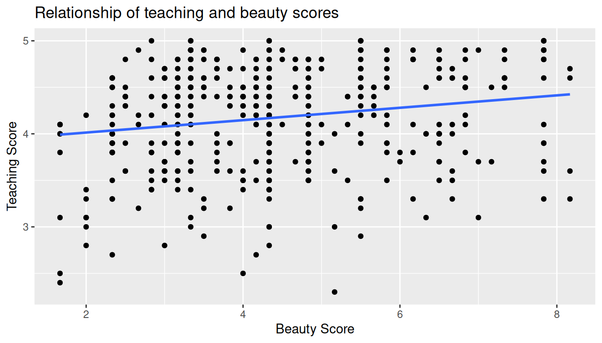
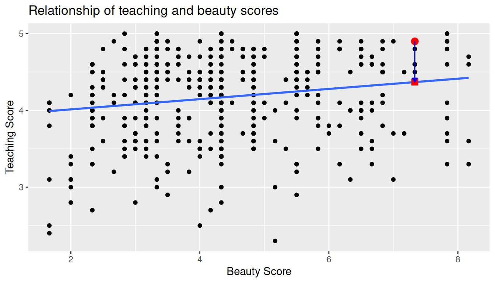
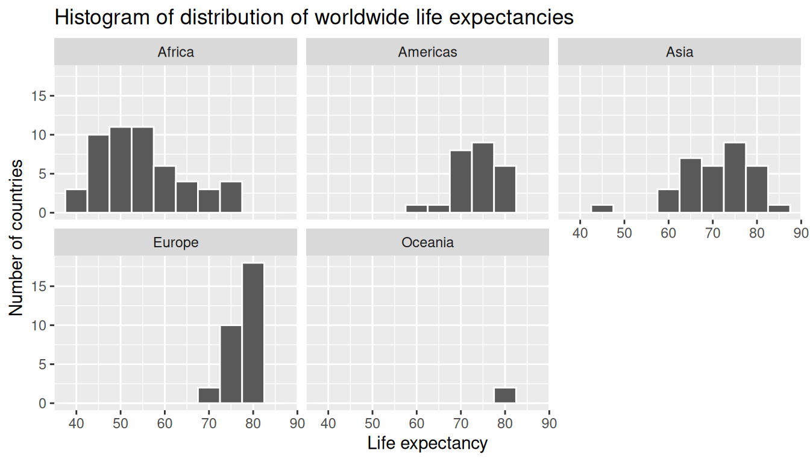
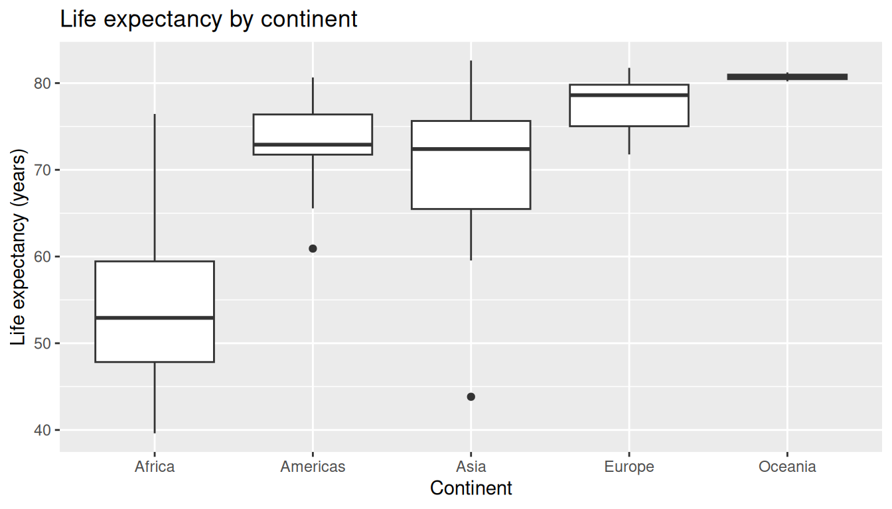

library(tidyverse)
library(skimr)
library(gapminder)
library(moderndive)5 Basic Regression
Now that we are equipped with data visualization skills from Chapter 2, an understanding of the “tidy” data format from Chapter 4, and data wrangling skills from Chapter 3, we now proceed with data modeling. The fundamental premise of data modeling is to make explicit the relationship between:
- an outcome variable \(y\), also called a dependent variable and
- an explanatory/predictor variable \(x\), also called an independent variable or covariate.
Another way to state this is using mathematical terminology: we will model the outcome variable \(y\) as a function of the explanatory/predictor variable \(x\). Why do we have two different labels, explanatory and predictor, for the variable \(x\)? That’s because roughly speaking data modeling can be used for two purposes:
Modeling for prediction: You want to predict an outcome variable \(y\) based on the information contained in a set of predictor variables. You don’t care so much about understanding how all the variables relate and interact, but so long as you can make good predictions about \(y\), you’re fine. For example, if we know many individuals’ risk factors for lung cancer, such as smoking habits and age, can we predict whether or not they will develop lung cancer? Here we wouldn’t care so much about distinguishing the degree to which the different risk factors contribute to lung cancer, but instead only on whether or not they could be put together to make reliable predictions.
Modeling for explanation: You want to explicitly describe the relationship between an outcome variable \(y\) and a set of explanatory variables, determine the significance of any found relationships, and have measures summarizing these. Continuing our example from above, we would now be interested in describing the individual effects of the different risk factors and quantifying the magnitude of these effects. One reason could be to design an intervention to reduce lung cancer cases in a population, such as targeting smokers of a specific age group with an advertisement for smoking cessation programs. In this book, we’ll focus more on this latter purpose.
Data modeling is used in a wide variety of fields, including statistical inference, causal inference, artificial intelligence, and machine learning. There are many techniques for data modeling, such as tree-based models, neural networks and deep learning, and supervised learning. In this chapter, we’ll focus on one particular technique: linear regression, one of the most commonly-used and easy-to-understand approaches to modeling. Recall our discussion in Subsection 1.4.3 on numerical and categorical variables. Linear regression involves:
- an outcome variable \(y\) that is numerical and
- explanatory variables \(x_i\) (e.g. \(x_1, x_2, ...\)) that are either numerical or categorical.
With linear regression there is always only one numerical outcome variable \(y\) but we have choices on both the number and the type of explanatory variables to use. We’re going to cover the following regression scenarios:
- In this current chapter on basic regression, we’ll always have only one explanatory variable.
- In Section 5.1, this explanatory variable will be a single numerical explanatory variable \(x\). This scenario is known as simple linear regression.
- In Section 5.2, this explanatory variable will be a categorical explanatory variable \(x\).
- In the next chapter, Chapter 6 on multiple regression, we’ll have more than one explanatory variable:
- We’ll focus on two numerical explanatory variables, \(x_1\) and \(x_2\), in Section 6.1.
- We’ll use one numerical and one categorical explanatory variable in Section 6.1. We’ll also introduce interaction models here; there, the effect of one explanatory variable depends on the value of another.
We’ll study all four of these regression scenarios using real data, all easily accessible via R packages!
Packages Needed
Let’s now load all the packages needed for this chapter (this assumes you’ve already installed them). In this chapter we introduce some new packages:
The
tidyverse“umbrella” package. Recall from our discussion in Subsection 4.4.1 that loading thetidyversepackage by runninglibrary(tidyverse)loads the following commonly used data science packages all at once:ggplot2for data visualizationdplyrfor data wranglingtidyrfor converting data to “tidy” formatreadrfor importing spreadsheet data into R- As well as the more advanced
purrr,tibble,stringr, andforcatspackages
The
skimr(Waring et al. 2022) package, which provides a simple-to-use function to quickly compute a wide array of commonly-used summary statistics.The
gapminderpackage, which provides excerpts of data available from Gapminder.orgThe
moderndivepackage, which includes datasets we will analyze
If needed, read Section 1.3 for information on how to install and load R packages.
5.1 One numerical explanatory variable
Why do some professors and instructors at universities and colleges get high teaching evaluations from students while others don’t? What factors can explain these differences? Are there biases? These are questions that are of interest to university/college administrators, as teaching evaluations are among the many criteria considered in determining which professors and instructors should get promotions. Researchers at the University of Texas in Austin, Texas (UT Austin) tried to answer this question: what factors can explain differences in instructor’s teaching evaluation scores? To this end, they collected information on \(n = 463\) instructors. A full description of the study can be found at openintro.org.
We’ll keep things simple for now and try to explain differences in instructor evaluation scores as a function of one numerical variable: their “beauty score.” The specifics on how this score was calculated will be described shortly.
Could it be that instructors with higher beauty scores also have higher teaching evaluations? Could it be instead that instructors with higher beauty scores tend to have lower teaching evaluations? Or could it be there is no relationship between beauty score and teaching evaluations?
We’ll achieve ways to address these questions by modeling the relationship between these two variables with a particular kind of linear regression called simple linear regression. Simple linear regression is the most basic form of linear regression. With it we have
A numerical outcome variable \(y\). In this case, an instructor’s teaching score.
A single numerical explanatory variable \(x\). In this case, an instructor’s beauty score.
5.1.1 Exploratory data analysis
A crucial step before doing any kind of modeling or analysis is performing an exploratory data analysis, or EDA, of all our data. Exploratory data analysis can give you a sense of the distribution of the data and whether there are outliers and/or missing values. Most importantly, it can inform how to build your model. There are many approaches to exploratory data analysis; here are three:
Most fundamentally: just looking at the raw values, in a spreadsheet for example. While this may seem trivial, many people ignore this crucial step!
Computing summary statistics like means, medians, and standard deviations.
Creating data visualizations.
Let’s load the evals data (which is built into the moderndive package), select only a subset of the variables, and look at the raw values. Recall you can look at the raw values by running View() in the console in RStudio to pop-up the spreadsheet viewer with the data frame of interest as the argument to View(). Here, however, we present only a snapshot of five randomly chosen rows:
evals_ch5 <- evals %>%
select(score, bty_avg, age)evals_ch5 %>%
slice_sample(n = 5)| score | bty_avg | age |
|---|---|---|
| 3.7 | 3.00 | 62 |
| 4.7 | 4.33 | 46 |
| 4.8 | 5.50 | 62 |
| 2.8 | 2.00 | 62 |
| 4.0 | 2.33 | 64 |
While a full description of each of these variables can be found at openintro.org, let’s summarize what each of these variables represents.
score: Numerical variable of the average teaching score based on students’ evaluations between 1 and 5. This is the outcome variable \(y\) of interest.bty_avg: Numerical variable of average “beauty” rating based on a panel of 6 students’ scores between 1 and 10. This is the numerical explanatory variable \(x\) of interest. Here 1 corresponds to a low beauty rating and 10 to a high beauty rating.age: A numerical variable of age in years as an integer value.
An alternative way to look at the raw data values is by choosing a random sample of the rows in evals_ch5 by piping it into the slice_sample() function from the dplyr package. Here we set the n argument to be 5, indicating that we want a random sample of 5 rows. We display the results in Table 5.1. Note that due to the random nature of the sampling, you will likely end up with a different subset of 5 rows.
evals_ch5 %>%
slice_sample(n = 5)| score | bty_avg | age |
|---|---|---|
| 4.4 | 5.67 | 57 |
| 3.1 | 7.00 | 33 |
| 4.1 | 4.17 | 45 |
| 5.0 | 4.33 | 46 |
| 4.8 | 4.83 | 52 |
Now that we’ve looked at the raw values in our evals_ch5 data frame and got a preliminary sense of the data, let’s move on to the next common step in an exploratory data analysis: computing summary statistics. Let’s start by computing the mean and median of our numerical outcome variable score and our numerical explanatory variable “beauty” score denoted as bty_avg. We’ll do this by using the summarize() function from dplyr along with the mean() and median() summary functions we saw in Section 3.3.
evals_ch5 %>%
summarize(
mean_bty_avg = mean(bty_avg),
mean_score = mean(score),
median_bty_avg = median(bty_avg),
median_score = median(score)
)# A tibble: 1 × 4
mean_bty_avg mean_score median_bty_avg median_score
<dbl> <dbl> <dbl> <dbl>
1 4.42 4.17 4.33 4.3However, what if we want other summary statistics as well, such as the standard deviation (a measure of spread), the minimum and maximum values, and various percentiles? Typing out all these summary statistic functions in summarize() would be long and tedious. Instead, let’s use the convenient skim() function from the skimr package. This function takes in a data frame, “skims” it, and returns commonly used summary statistics. Let’s take our evals_ch5 data frame, select() only the outcome and explanatory variables teaching score and bty_avg, and pipe them into the skim() function:
evals_ch5 %>%
select(score, bty_avg) %>%
skim()── Data Summary ────────────────────────
Values
Name Piped data
Number of rows 463
Number of columns 2
_______________________
Column type frequency:
numeric 2
________________________
Group variables None
── Variable type: numeric ──────────────────────────────────────────────────────
skim_variable n_missing complete_rate mean sd p0 p25 p50 p75 p100 hist
1 score 0 1 4.17 0.544 2.3 3.8 4.3 4.6 5 ▁▁▅▇▇
2 bty_avg 0 1 4.42 1.53 1.67 3.17 4.33 5.5 8.17 ▃▇▇▃▂ For our two numerical variables teaching score and “beauty” score bty_avg it returns:
n_missing: the number of missing valuescomplete_rate: the proportion of non-missing or complete valuesmean: the averagesd: the standard deviationp0: the 0th percentile: the value at which 0% of observations are smaller than it (the minimum value)p25: the 25th percentile: the value at which 25% of observations are smaller than it (the 1st quartile)p50: the 50th percentile: the value at which 50% of observations are smaller than it (the 2nd quartile and more commonly called the median)p75: the 75th percentile: the value at which 75% of observations are smaller than it (the 3rd quartile)p100: the 100th percentile: the value at which 100% of observations are smaller than it (the maximum value)
Looking at this output, we get an idea of how the values of both variables distribute. For example, the mean teaching score was 4.17 out of 5 whereas the mean “beauty” score was 4.42 out of 10. Furthermore, the middle 50% of teaching scores were between 3.80 and 4.6 (the first and third quartiles) whereas the middle 50% of “beauty” scores were between 3.17 and 5.5 out of 10.
The skim() function only returns what are known as univariate summary statistics: functions that take a single variable and return some numerical summary of that variable. However, there also exist bivariate summary statistics: functions that take in two variables and return some summary of those two variables. In particular, when the two variables are numerical, we can compute the correlation coefficient. Generally speaking, coefficients are quantitative expressions of a specific phenomenon. A correlation coefficient is a quantitative expression of the strength of the linear relationship between two numerical variables. Its value ranges between -1 and 1 where:
- -1 indicates a perfect negative relationship: As the value of one variable goes up, the value of the other variable tends to go down following along a straight line.
- 0 indicates no relationship: The values of both variables go up/down independently of each other.
- +1 indicates a perfect positive relationship: As the value of one variable goes up, the value of the other variable tends to go up as well in a linear fashion.
Figure 5.1 gives examples of different correlation coefficient values for hypothetical numerical variables \(x\) and \(y\). We see that while for a correlation coefficient of -0.75 there is still a negative relationship between \(x\) and \(y\), it is not as strong as the negative relationship between \(x\) and \(y\) when the correlation coefficient is -1.
The correlation coefficient is computed using the cor() function, where the inputs to the function are the two numerical variables for which we want to quantify the strength of the linear relationship.
evals_ch5 %>%
summarise(correlation = cor(score, bty_avg))# A tibble: 1 × 1
correlation
<dbl>
1 0.187You can also use the cor() function directly instead of using it inside summarise, but you will need to use the $ syntax to access the specific variables within a data frame (See Subsection 1.4.3):
cor(x = evals_ch5$bty_avg, y = evals_ch5$score)[1] 0.187In our case, the correlation coefficient of 0.187 indicates that the relationship between teaching evaluation score and beauty average is “weakly positive.” There is a certain amount of subjectivity in interpreting correlation coefficients, especially those that aren’t close to -1, 0, and 1. For help developing such intuition and more discussion on the correlation coefficient see [Subsection 5.3.1 below.
Let’s now proceed by visualizing this data. Since both the score and bty_avg variables are numerical, a scatterplot is an appropriate graph to visualize this data. Let’s do this using geom_point() and set informative axes labels and title and display the result in Figure 5.2.
ggplot(evals_ch5, aes(x = bty_avg, y = score)) +
geom_point() +
labs(x = "Beauty Score", y = "Teaching Score",
title = "Relationship of teaching and beauty scores")Observe the following:
Most “beauty” scores lie between 2 and 8.
Most teaching scores lie between 3 and 5.
Recall our earlier computation of the correlation coefficient, which describes the strength of the linear relationship between two numerical variables. Looking at Figure 5.3, it is not immediately apparent that these two variables are positively related. This is to be expected given the positive, but rather weak (close to 0), correlation coefficient of 0.187.
Before we continue, we bring to light an important fact about this dataset: it suffers from overplotting. Recall from the data visualization Subsection 2.3.2 that overplotting occurs when several points are stacked directly on top of each other thereby obscuring the number of points. For example, let’s focus on the 6 points in the top-right of the plot with a beauty score of around 8 out of 10: are there truly only 6 points, or are there many more just stacked on top of each other? You can think of these as ties. Let’s break up these ties with a little random “jitter” added to the points in Figure 5.3.
Jittering adds a little random bump to each of the points to break up these ties: just enough so you can distinguish them, but not so much that the plot is overly altered. Furthermore, jittering is strictly a visualization tool; it does not alter the original values in the dataset.
Let’s compare side-by-side the regular scatterplot in Figure 5.2 with the jittered scatterplot Figure 5.3.
We make several further observations:
Focusing our attention on the top-right of the plot again, as noted earlier where there seemed to only be 6 points in the regular scatterplot, we see there were in fact really 9 as seen in the jittered scatterplot.
A further interesting trend is that the jittering revealed a large number of instructors with beauty scores of between 3 and 4.5, towards the lower end of the beauty scale.
To keep things simple in this chapter, we’ll present regular scatterplots rather than the jittered scatterplots, though we’ll keep the overplotting in mind whenever looking at such plots. Going back to scatterplot in Figure 5.2, let’s improve on it by adding a “regression line” in Figure 5.5. This is easily done by adding a new layer to the ggplot code that created Figure 5.3: + geom_smooth(method = "lm"). A regression line is a “best fitting” line in that of all possible lines you could draw on this plot, it is “best” in terms of some mathematical criteria. We discuss the criteria for “best” in Subsection 5.3.3 below, but we suggest you read this only after covering the concept of a residual coming up in Subsection 5.1.3.
ggplot(evals_ch5, aes(x = bty_avg, y = score)) +
geom_point() +
labs(
x = "Beauty Score",
y = "Teaching Score",
title = "Relationship of teaching and beauty scores"
) +
geom_smooth(method = "lm")When viewed on this plot, the regression line is a visual summary of the relationship between two numerical variables, in our case the outcome variable score and the explanatory variable bty_avg. The positive slope of the blue line is consistent with our observed correlation coefficient of 0.187 suggesting that there is a positive relationship between score and bty_avg. We’ll see later however that while the correlation coefficient is not equal to the slope of this line, they always have the same sign: positive or negative.
What are the grey bands surrounding the blue line? These are standard error bands, which can be thought of as error/uncertainty bands. Let’s skip this idea for now and suppress these grey bars by adding the argument se = FALSE to geom_smooth(method = "lm"). We’ll introduce standard errors when covering sampling distributions (Chapter 9). We also will use standard errors to construct confidence intervals (Chapter 10) and conduct hypothesis tests (Chapter 12). Standard errors are really important!
ggplot(evals_ch5, aes(x = bty_avg, y = score)) +
geom_point() +
labs(
x = "Beauty Score",
y = "Teaching Score",
title = "Relationship of teaching and beauty scores"
) +
geom_smooth(method = "lm", se = FALSE)

5.1.2 Simple linear regression
You may recall from secondary school / high school algebra, in general, the equation of a line is \(y = a + bx\), which is defined by two coefficients. Recall we defined this earlier as “quantitative expressions of a specific property of a phenomenon.” These two coefficients are:
- the intercept coefficient \(a\), or the value of \(y\) when \(x = 0\), and
- the slope coefficient \(b\), or the increase in \(y\) for every increase of one in \(x\).
However, when defining a line specifically for regression, like the blue regression line in Figure 5.6, we use slightly different notation: the equation of the regression line is \(\widehat{y} = b_0 + b_1 \cdot x\) where
- the intercept coefficient is \(b_0\), or the value of \(\widehat{y}\) when \(x=0\), and
- the slope coefficient \(b_1\), or the increase in \(\widehat{y}\) for every increase of one in \(x\).
Why do we put a “hat” on top of the \(y\)? It’s a form of notation commonly used in regression, which we’ll introduce in the next Subsection 5.1.3 when we discuss fitted values. For now, let’s ignore the hat and treat the equation of the line as you would from secondary school / high school algebra recognizing the slope and the intercept. We know looking at Figure 5.6 that the slope coefficient corresponding to bty_avg should be positive. Why? Because as bty_avg increases, professors tend to roughly have higher teaching evaluation scores. However, what are the specific values of the intercept and slope coefficients? Let’s not worry about computing these by hand, but instead let the computer do the work for us. Specifically, let’s use R!
Let’s get the value of the intercept and slope coefficients by outputting something called the linear regression table. We will fit the linear regression model to the data using the lm() function and save this to score_model. lm stands for “linear model.” When we say “fit”, we are saying find the best fitting line to this data.
The lm() function that “fits” the linear regression model is typically used as lm(y ~ x, data = data_frame_name) where:
yis the outcome variable, followed by a tilde (~). This is likely the key to the left of “1” on your keyboard. In our case,yis set toscore.xis the explanatory variable. In our case,xis set tobty_avg. We call the combinationy ~ xa model formula.data_frame_nameis the name of the data frame that contains the variablesyandx. In our case,data_frame_nameis theevals_ch5data frame.
score_model <- lm(score ~ bty_avg, data = evals_ch5)
score_model
Call:
lm(formula = score ~ bty_avg, data = evals_ch5)
Coefficients:
(Intercept) bty_avg
3.8803 0.0666 This output is telling us that the Intercept coefficient \(b_0\) of the regression line is 3.8803, and the slope coefficient for by_avg is 0.0666. Therefore the blue regression line in Figure 5.6 is
\[\widehat{\text{score}} = b_0 + b_{\text{bty avg}} \cdot\text{bty avg} = 3.8803 + 0.0666\cdot\text{bty avg}\]
where
The intercept coefficient \(b_0 = 3.8803\) means for instructors that had a hypothetical beauty score of 0, we would expect them to have on average a teaching score of 3.8803. In this case however, while the intercept has a mathematical interpretation when defining the regression line, there is no practical interpretation since
scoreis an average of a panel of 6 students’ ratings from 1 to 10, abty_avgof 0 would be impossible. Furthermore, no instructors had a beauty score anywhere near 0 in this data.Of more interest is the slope coefficient associated with
bty_avg: \(b_{\text{bty avg}} = +0.0666\). This is a numerical quantity that summarizes the relationship between the outcome and explanatory variables. Note that the sign is positive, suggesting a positive relationship between beauty scores and teaching scores, meaning as beauty scores go up, so also do teaching scores go up. The slope’s precise interpretation is:
For every increase of 1 unit in
bty_avg, there is an associated increase of, on average, 0.0666 units ofscore.
Important
Such interpretations need be carefully worded:
We only stated that there is an associated increase, and not necessarily a causal increase. For example, perhaps it’s not that beauty directly affects teaching scores, but instead younger instructors tend to be perceived as better teachers (perhaps because they are more energetic or use more modern techniques), and younger instructors are also perceived to be more beautiful. Avoiding such reasoning can be summarized by the adage “correlation is not necessarily causation.” In other words, just because two variables are correlated, it doesn’t mean one directly causes the other. We discuss these ideas more in Subsection 5.3.2 and in Chapter 7.
We say that this associated increase is on average 0.0666 units of teaching
scoreand not that the associated increase is exactly 0.0666 units ofscoreacross all values ofbty_avg. This is because the slope is the average increase across all points as shown by the regression line in Figure 5.6.
Now that we’ve learned how to compute the equation for the blue regression line in Figure 5.6 and interpreted all its terms, let’s take our modeling one step further. This time after fitting the model using the lm(), let’s get something called the regression table using the summary() function:
# Fit regression model:
score_model <- lm(score ~ bty_avg, data = evals_ch5)
# Get regression results:
summary(score_model)
Call:
lm(formula = score ~ bty_avg, data = evals_ch5)
Residuals:
Min 1Q Median 3Q Max
-1.925 -0.369 0.142 0.398 0.931
Coefficients:
Estimate Std. Error t value Pr(>|t|)
(Intercept) 3.8803 0.0761 50.96 < 0.0000000000000002 ***
bty_avg 0.0666 0.0163 4.09 0.000051 ***
---
Signif. codes: 0 '***' 0.001 '**' 0.01 '*' 0.05 '.' 0.1 ' ' 1
Residual standard error: 0.535 on 461 degrees of freedom
Multiple R-squared: 0.035, Adjusted R-squared: 0.0329
F-statistic: 16.7 on 1 and 461 DF, p-value: 0.0000508Note how we took the output of the model fit saved in score_model and used it as an input to the subsequent summary() function. The raw output of the summary() function above gives lots of information about the regression model that we won’t cover in this introductory course (e.g., Multiple R-squared, F-statistic, etc.). We will only consider the “Coefficients” section of the output. We can print these relevant results only by accessing the coefficients object stored in the summary results.
summary(score_model)$coefficients| term | Estimate | Std. Error | t value | p value |
|---|---|---|---|---|
| (Intercept) | 3.880 | 0.076 | 50.96 | 0 |
| bty_avg | 0.067 | 0.016 | 4.09 | 0 |
For now since we are only using regression as an exploratory data analysis tool, we will only focus on the “Estimate” column that contains the estimates of the intercept and slope for the best fit line for our data. The remaining three columns refer to statistical concepts known as standard errors, t-statistics, and p-values, which we will cover in Parts III and IV of the book when we talk about statistical theory and inference.
5.1.3 Observed/fitted values and residuals
We just saw how to get the value of the intercept and the slope of the regression line from the regression table generated by summary(). Now instead, say we want information on individual points. In this case, we focus on one of the \(n = 463\) instructors in this dataset, corresponding to a single row of evals_ch5.
For example, say we are interested in the 21st instructor in this dataset:
| score | bty_avg | age |
|---|---|---|
| 4.9 | 7.33 | 31 |
What is the value on the blue line corresponding to this instructor’s bty_avg of 7.333? In Figure 5.7 we mark three values in particular corresponding to this instructor.
Red circle: This is the observed value \(y\) = 4.9 and corresponds to this instructor’s actual teaching score.
Red square: This is the fitted value \(\widehat{y}\) and corresponds to the value on the regression line for \(x\) = 7.333. This value is computed using the intercept and slope in the regression table above:
\[\widehat{y} = b_0 + b_1 \cdot x = 3.88 + 0.067 * 7.333 = 4.369\]
- Blue arrow: The length of this arrow is the residual and is computed by subtracting the fitted value \(\widehat{y}\) from the observed value \(y\). The residual can be thought of as the error or “lack of fit” of the regression line. In the case of this instructor, it is \(y - \widehat{y}\) = 4.9 - 4.369 = 0.531. In other words, the model was off by 0.531 teaching score units for this instructor.

What if we want both
- the fitted value \(\widehat{y} = b_0 + b_1 \cdot x\) and
- the residual \(y - \widehat{y}\)
for not only the 21st instructor but for all 463 instructors in the study? Recall that each instructor corresponds to one of the 463 rows in the evals_ch5 data frame and also one of the 463 points in the regression plot in Figure 5.6.
We could repeat the above calculations by hand 463 times, but that would be tedious and time consuming. Instead, let’s use our data wrangling tools from Chapter 3 and the functions fitted() and residuals() to create a data frame with these values. Similar to the summary() function, the fitted() and residuals() functions also take a model object as their input. fitted() calculates all the fitted \(\hat{y}\) values by plugging in each observed \(x\) value in the dataset into the regression equation, and residuals() similarly calculates all the residuals (\(y - \hat{y}\)) for each observation in the dataset. The following code will store these new \(\hat{y}\) and residual variables, which we will name score_hat and residual respectively, along with their corresponding score and bty_avg values from the original data evals_ch5.
score_model_data <- evals_ch5 %>%
select(score, bty_avg) %>%
mutate(
score_hat = fitted(score_model),
residual = residuals(score_model)
) %>%
rownames_to_column("ID")Note that we also used the rownames_to_column() function from the tibble package (part of the tidyverse suite) to create a convenient ID column from the rownames. In the table below we only present the results for the 21st through the 24th instructors.
| ID | score | bty_avg | score_hat | residual |
|---|---|---|---|---|
| 21 | 4.9 | 7.33 | 4.37 | 0.531 |
| 22 | 4.6 | 7.33 | 4.37 | 0.231 |
| 23 | 4.5 | 7.33 | 4.37 | 0.131 |
| 24 | 4.4 | 5.50 | 4.25 | 0.153 |
Let’s recap what we’re seeing in Table 5.3 in terms of the linear regression model (score_model) that we fit to the evals_ch5 data:
The
IDcolumn represents the row number where this observation appears in the originalevals_ch5dataThe
scorecolumn represents the observed value of the outcome variable \(y\).The
bty_avgcolumn represents the values of the explanatory variable \(x\).The
score_hatcolumn represents the fitted values \(\widehat{y}\).The
residualcolumn represents the residuals \(y - \widehat{y}\).
Just as we did for the 21st instructor in the evals_ch5 dataset (in the first row of the table above), let’s repeat the above calculations for the 24th instructor in the evals_ch5 dataset (in the fourth row of the table above):
score= 4.4 is the observed value \(y\) for this instructor.bty_avg= 5.50 is the value of the explanatory variable \(x\) for this instructor.score_hat= 4.25 = 3.88 + 0.067 * \(x\) = 3.88 + 0.067 * 5.50 is the fitted value \(\widehat{y}\) for this instructor.residual= 0.153 = 4.4 - 4.25 is the value of the residual for this instructor. In other words, the model was off by 0.153 teaching score units for this instructor.
More development of this idea appears in Subsection 5.3.3 and we encourage you to read that section after you investigate residuals.
5.2 One categorical explanatory variable
It’s an unfortunate truth that life expectancy is not the same across various countries in the world; there are a multitude of factors that are associated with how long people live. International development agencies are very interested in studying these differences in the hope of understanding where governments should allocate resources to address this problem. In this section, we’ll explore differences in life expectancy in two ways:
Differences between continents: Are there significant differences in life expectancy, on average, between the five continents of the world: Africa, the Americas, Asia, Europe, and Oceania?
Differences within continents: How does life expectancy vary within the world’s five continents? For example, is the spread of life expectancy among the countries of Africa larger than the spread of life expectancy among the countries of Asia?
To answer such questions, we’ll study the gapminder dataset from the gapminder package. Recall we mentioned this dataset in Subsection 2.1.2 when we first introduced the “Grammar of Graphics” (Chapter 2). This dataset has international development statistics such as life expectancy, GDP per capita, and population by country (\(n\) = 142) for 5-year intervals between 1952 and 2007.
We’ll use this data for linear regression again, but note that our explanatory variable \(x\) is now categorical, and not numerical like when we covered simple linear regression in Section 5.1. More precisely, we have:
A numerical outcome variable \(y\). In this case, life expectancy.
A single categorical explanatory variable \(x\). In this case, the continent the country is part of.
When the explanatory variable \(x\) is categorical, the concept of a “best-fitting” line is a little different than the one we saw previously in Section 5.1 where the explanatory variable \(x\) was numerical. We’ll study these differences shortly in [Subsection 5.2.2, but first we conduct our exploratory data analysis.
5.2.1 Exploratory data analysis
The data on the 142 countries can be found in the gapminder data frame included in the gapminder package. However, to keep things simple, let’s filter() for only those observations/rows corresponding to the year 2007. Additionally, let’s select() only the subset of the variables we’ll consider in this chapter. We’ll save this data in a new data frame called gapminder2007:
library(gapminder)
gapminder2007 <- gapminder %>%
filter(year == 2007) %>%
select(country, lifeExp, continent, gdpPercap)Recall from Section 5.1.1 that there are three common steps in an exploratory data analysis:
Most crucially: Looking at the raw data values.
Computing summary statistics, like means, medians, and interquartile ranges.
Creating data visualizations.
Let’s perform the first common step in an exploratory data analysis: looking at the raw data values. You can do this by using RStudio’s spreadsheet viewer or by using the glimpse() command as introduced in Section 1.4.3 on exploring data frames:
glimpse(gapminder2007)Rows: 142
Columns: 4
$ country <fct> "Afghanistan", "Albania", "Algeria", "Angola", "Argentina", …
$ lifeExp <dbl> 43.8, 76.4, 72.3, 42.7, 75.3, 81.2, 79.8, 75.6, 64.1, 79.4, …
$ continent <fct> Asia, Europe, Africa, Africa, Americas, Oceania, Europe, Asi…
$ gdpPercap <dbl> 975, 5937, 6223, 4797, 12779, 34435, 36126, 29796, 1391, 336…Observe that Observations: 142 indicates that there are 142 rows/observations in gapminder2007, where each row corresponds to one country. In other words, the observational unit is an individual country. Furthermore, observe that the variable continent is of type <fct>, which stands for factor, which is R’s way of encoding categorical variables.
A full description of all the variables included in gapminder can be found by reading the associated help file (run ?gapminder in the console). However, let’s fully describe the 4 variables we selected in gapminder2007:
country: An identification text variable used to distinguish the 142 countries in the dataset.lifeExp: A numerical variable of that country’s life expectancy at birth. This is the outcome variable \(y\) of interest.continent: A categorical variable with five levels. Here “levels” corresponds to the possible categories: Africa, Asia, Americas, Europe, and Oceania. This is the explanatory variable \(x\) of interest.gdpPercap: A numerical variable of that country’s GDP per capita in US inflation-adjusted dollars that we’ll use as another outcome variable \(y\) in the Learning Check at the end of this subsection.
Furthermore, let’s look at a random sample of five out of the 142 countries in Table 5.4. Again, note due to the random nature of the sampling, you will likely end up with a different subset of 5 rows.
gapminder2007 %>%
slice_sample(n = 5)| country | lifeExp | continent | gdpPercap |
|---|---|---|---|
| Togo | 58.4 | Africa | 883 |
| Sao Tome and Principe | 65.5 | Africa | 1598 |
| Congo, Dem. Rep. | 46.5 | Africa | 278 |
| Lesotho | 42.6 | Africa | 1569 |
| Bulgaria | 73.0 | Europe | 10681 |
Now that we’ve looked at the raw values in our gapminder2007 data frame and got a sense of the data, let’s move on to computing summary statistics. Let’s once again apply the skim() function from the skimr package. Recall from our previous EDA that this function takes in a data frame, “skims” it, and returns commonly used summary statistics. Let’s take our gapminder2007 data frame, select() only the outcome and explanatory variables lifeExp and continent, and pipe them into the skim() function:
gapminder2007 %>%
select(lifeExp, continent) %>%
skim()── Data Summary ────────────────────────
Values
Name Piped data
Number of rows 142
Number of columns 2
_______________________
Column type frequency:
factor 1
numeric 1
________________________
Group variables None
── Variable type: factor ───────────────────────────────────────────────────────────────────
skim_variable n_missing complete_rate ordered n_unique top_counts
1 continent 0 1 FALSE 5 Afr: 52, Asi: 33, Eur: 30, Ame: 25
── Variable type: numeric ──────────────────────────────────────────────────────────────────
skim_variable n_missing complete_rate mean sd p0 p25 p50 p75 p100 hist
1 lifeExp 0 1 67.0 12.1 39.6 57.2 71.9 76.4 82.6 ▂▃▃▆▇The skim() output now reports summaries for categorical variables (Variable type:factor) separately from the numerical variables (Variable type:numeric). For the categorical variable continent, it reports:
n_missingandcomplete_rate, which are the number of missing and proportion of non-missing values, respectively.n_unique: The number of unique levels to this variable, corresponding to Africa, Asia, Americas, Europe, and Oceania. This refers to the how many countries are in the data for each continent.top_counts: In this case the top four counts:Africahas 52 countries,Asiahas 33,Europehas 30, andAmericashas 25. Not displayed isOceaniawith 2 countries.
Turning our attention to the summary statistics of the numerical variable lifeExp, we observe that the global median life expectancy in 2007 was 71.94. Thus, half of the world’s countries (71 countries) had a life expectancy less than 71.94. The mean life expectancy of 67.01 is lower however. Why is the mean life expectancy lower than the median?
We can answer this question by performing the last of the three common steps in an exploratory data analysis: creating data visualizations. Let’s visualize the distribution of our outcome variable \(y\) = lifeExp in Figure 5.8.
ggplot(gapminder2007, aes(x = lifeExp)) +
geom_histogram(binwidth = 5, color = "white") +
labs(
x = "Life expectancy",
y = "Number of countries",
title = "Histogram of distribution of worldwide life expectancies"
)We see that this data is left-skewed, also known as negatively skewed: there are a few countries with low life expectancy that are bringing down the mean life expectancy. However, the median is less sensitive to the effects of such outliers; hence, the median is greater than the mean in this case.
Remember, however, that we want to compare life expectancies both between continents and within continents. In other words, our visualizations need to incorporate some notion of the variable continent. We can do this easily with a faceted histogram. Recall from Section 2.6 that facets allow us to split a visualization by the different values of another variable. We display the resulting visualization in Figure 5.9 by adding a facet_wrap(~ continent, nrow = 2) layer.
ggplot(gapminder2007, aes(x = lifeExp)) +
geom_histogram(binwidth = 5, color = "white") +
labs(
x = "Life expectancy",
y = "Number of countries",
title = "Histogram of distribution of worldwide life expectancies") +
facet_wrap(~ continent, nrow = 2)

Observe that unfortunately the distribution of African life expectancies is much lower than the other continents, while in Europe life expectancies tend to be higher and furthermore do not vary as much. On the other hand, both Asia and Africa have the most variation in life expectancies. There is the least variation in Oceania, but keep in mind that there are only two countries in Oceania: Australia and New Zealand.
Recall that an alternative method to visualize the distribution of a numerical variable split by a categorical variable is by using a side-by-side boxplot. We map the categorical variable continent to the \(x\)-axis and the different life expectancies within each continent on the \(y\)-axis in Figure 5.10.
ggplot(gapminder2007, aes(x = continent, y = lifeExp)) +
geom_boxplot() +
labs(
x = "Continent",
y = "Life expectancy (years)",
title = "Life expectancy by continent"
)

Some people prefer comparing the distributions of a numerical variable between different levels of a categorical variable using a boxplot instead of a faceted histogram. This is because we can make quick comparisons between the categorical variable’s levels with imaginary horizontal lines. For example, observe in Figure 5.10 that we can quickly convince ourselves that Oceania has the highest median life expectancies by drawing an imaginary horizontal line at \(y\) = 80. Furthermore, as we observed in the faceted histogram in Figure 5.9, Africa and Asia have the largest variation in life expectancy as evidenced by their large interquartile ranges (the heights of the boxes).
It’s important to remember however that the solid lines in the middle of the boxes correspond to the medians (the middle value) rather than the mean (the average). So for example, if you look at Asia, the solid line denotes the median life expectancy of around 72 years. This tells us that half of all countries in Asia have a life expectancy below 72 years whereas half have a life expectancy above 72 years.
Let’s compute the median and mean life expectancy for each continent with a little more data wrangling and display the results in Table 5.5.
lifeExp_by_continent <- gapminder2007 %>%
group_by(continent) %>%
summarize(median = median(lifeExp), mean = mean(lifeExp))| continent | median | mean |
|---|---|---|
| Africa | 52.9 | 54.8 |
| Americas | 72.9 | 73.6 |
| Asia | 72.4 | 70.7 |
| Europe | 78.6 | 77.6 |
| Oceania | 80.7 | 80.7 |
Observe the order of the second column median life expectancy: Africa is lowest, the Americas and Asia are next with similar medians, then Europe, then Oceania. This ordering corresponds to the ordering of the solid black lines inside the boxes in our side-by-side boxplot in Figure 5.10.
Let’s now turn our attention to the values in the third column mean. Using Africa’s mean life expectancy of 54.8 as a baseline for comparison, let’s start making relative comparisons to the life expectancies of the other four continents:
The mean life expectancy of the Americas is 73.6 - 54.8 = 18.8 years higher.
The mean life expectancy of Asia is 70.7 - 54.8 = 15.9 years higher.
The mean life expectancy of Europe is 77.6 - 54.8 = 22.8 years higher.
The mean life expectancy of Oceania is 80.7 - 54.8 = 25.9 years higher.
Let’s put these values in Table 5.6, which we’ll revisit later on in this section.
| continent | mean | Difference versus Africa |
|---|---|---|
| Africa | 54.8 | 0.0 |
| Americas | 73.6 | 18.8 |
| Asia | 70.7 | 15.9 |
| Europe | 77.6 | 22.8 |
| Oceania | 80.7 | 25.9 |
5.2.2 Linear regression
In Subsection 5.1.2 we introduced simple linear regression, which involves modeling the relationship between a numerical outcome variable \(y\) as a function of a numerical explanatory variable \(x\), in our life expectancy example, we now have a categorical explanatory variable \(x\) continent. While we still can fit a regression model, given our categorical explanatory variable we no longer have a concept of a “best-fitting” line, but rather “differences relative to a baseline for comparison.”
Before we fit our regression model, let’s create a table similar to Table 5.5, but
Report the mean life expectancy for each continent.
Report the difference in mean life expectancy relative to Africa’s mean life expectancy of 54.806 in the column “mean vs Africa”; this column is simply the “mean” column minus 54.806.
Think back to your observations from the eyeball test of Figure 5.10 at the end of the last subsection. The column “mean vs Africa” is the same idea of comparing a summary statistic to a baseline for comparison, in this case the countries of Africa, but using means instead of medians.
| continent | mean | mean vs Africa |
|---|---|---|
| Africa | 54.8 | 0.0 |
| Americas | 73.6 | 18.8 |
| Asia | 70.7 | 15.9 |
| Europe | 77.6 | 22.8 |
| Oceania | 80.7 | 25.9 |
Now, let’s use the summary() function again to get the regression table for the gapminder2007 analysis:
lifeExp_model <- lm(lifeExp ~ continent, data = gapminder2007)
summary(lifeExp_model)$coefficients| term | Estimate | Std. Error | t value | p value |
|---|---|---|---|---|
| (Intercept) | 54.8 | 1.02 | 53.45 | 0 |
| continentAmericas | 18.8 | 1.80 | 10.45 | 0 |
| continentAsia | 15.9 | 1.65 | 9.68 | 0 |
| continentEurope | 22.8 | 1.70 | 13.47 | 0 |
| continentOceania | 25.9 | 5.33 | 4.86 | 0 |
Just as before, we’re only interested in the “Estimate” column, but unlike before, we now have 5 rows corresponding to 5 outputs in our table: an intercept like before, but also continentAmericas, continentAsia, continentEurope, and continentOceania. What are these values? First, we must describe the equation for fitted value \(\widehat{y}\), which is a little more complicated when the \(x\) explanatory variable is categorical:
\[ \begin{aligned} \widehat{\text{life exp}} &= b_0 + b_{\text{Amer}}\cdot\mathbb{1}_{\mbox{Amer}}(x) + b_{\text{Asia}}\cdot\mathbb{1}_{\mbox{Asia}}(x) + b_{\text{Euro}}\cdot\mathbb{1}_{\mbox{Euro}}(x) + b_{\text{Ocean}}\cdot\mathbb{1}_{\mbox{Ocean}}(x)\\ &= 54.8 + 18.8\cdot\mathbb{1}_{\mbox{Amer}}(x) + 15.9\cdot\mathbb{1}_{\mbox{Asia}}(x) + 22.8\cdot\mathbb{1}_{\mbox{Euro}}(x) + 25.9\cdot\mathbb{1}_{\mbox{Ocean}}(x) \end{aligned} \]
Let’s break this down. First, \(\mathbb{1}_{A}(x)\) is what’s known in mathematics as an “indicator function” that takes one of two possible values:
\[ \mathbb{1}_{A}(x) = \begin{cases} 1 & \text{if } x \in A \\ 0 & \text{otherwise} \end{cases} \]
In a statistical modeling context this is also known as a “dummy variable”. In our case, let’s consider the first such indicator variable:
\[ \mathbb{1}_{\mbox{Amer}}(x) = \left\{ \begin{array}{ll} 1 & \text{if } \text{country } x \text{ is in the Americas} \\ 0 & \text{otherwise}\end{array} \right. \]
Now let’s interpret the terms in the estimate column of the regression table. First \(b_0 =\) intercept = 54.8 corresponds to the mean life expectancy for countries in Africa, since for country \(x\) in Africa we have the following equation:
\[ \begin{aligned} \widehat{\text{life exp}} &= b_0 + b_{\text{Amer}}\cdot\mathbb{1}_{\mbox{Amer}}(x) + b_{\text{Asia}}\cdot\mathbb{1}_{\mbox{Asia}}(x) + b_{\text{Euro}}\cdot\mathbb{1}_{\mbox{Euro}}(x) + b_{\text{Ocean}}\cdot\mathbb{1}_{\mbox{Ocean}}(x)\\ &= 54.8 + 18.8\cdot\mathbb{1}_{\mbox{Amer}}(x) + 15.9\cdot\mathbb{1}_{\mbox{Asia}}(x) + 22.8\cdot\mathbb{1}_{\mbox{Euro}}(x) + 25.9\cdot\mathbb{1}_{\mbox{Ocean}}(x)\\ &= 54.8 + 18.8\cdot 0 + 15.9\cdot 0 + 22.8\cdot 0 + 25.9\cdot 0\\ &= 54.8 \end{aligned} \]
Meaning, all four of the indicator variables are equal to 0. Recall we stated earlier that we would treat Africa as the baseline for comparison group. Furthermore, this value corresponds to the group mean life expectancy for all African countries in Table 5.6.
Next, \(b_{\text{Amer}}\) = continentAmericas = 18.8 is the difference in mean life expectancy of countries in the Americas relative to Africa, or in other words, on average countries in the Americas had life expectancy 18.8 years greater. The fitted value yielded by this equation is:
\[ \begin{aligned} \widehat{\text{life exp}} &= b_0 + b_{\text{Amer}}\cdot\mathbb{1}_{\mbox{Amer}}(x) + b_{\text{Asia}}\cdot\mathbb{1}_{\mbox{Asia}}(x) + b_{\text{Euro}}\cdot\mathbb{1}_{\mbox{Euro}}(x) + b_{\text{Ocean}}\cdot\mathbb{1}_{\mbox{Ocean}}(x)\\ &= 54.8 + 18.8\cdot\mathbb{1}_{\mbox{Amer}}(x) + 15.9\cdot\mathbb{1}_{\mbox{Asia}}(x) + 22.8\cdot\mathbb{1}_{\mbox{Euro}}(x) + 25.9\cdot\mathbb{1}_{\mbox{Ocean}}(x)\\ &= 54.8 + 18.8\cdot 1 + 15.9\cdot 0 + 22.8\cdot 0 + 25.9\cdot 0\\ &= 54.8 + 18.8\\ &= 73.6 \end{aligned} \]
i.e. in this case, only the indicator function \(\mathbb{1}_{\mbox{Amer}}(x)\) is equal to 1, but all others are 0. Recall that 73.6 corresponds to the group mean life expectancy for all countries in the Americas in Table 5.6.
Similarly, \(b_{\text{Asia}}\) = continentAsia = 15.9 is the difference in mean life expectancy of Asian countries relative to Africa countries, or in other words, on average countries in the Asia had life expectancy 15.9 years greater than Africa. The fitted value yielded by this equation is:
\[ \begin{aligned} \widehat{\text{life exp}} &= b_0 + b_{\text{Amer}}\cdot\mathbb{1}_{\mbox{Amer}}(x) + b_{\text{Asia}}\cdot\mathbb{1}_{\mbox{Asia}}(x) + b_{\text{Euro}}\cdot\mathbb{1}_{\mbox{Euro}}(x) + b_{\text{Ocean}}\cdot\mathbb{1}_{\mbox{Ocean}}(x)\\ &= 54.8 + 18.8\cdot\mathbb{1}_{\mbox{Amer}}(x) + 15.9\cdot\mathbb{1}_{\mbox{Asia}}(x) + 22.8\cdot\mathbb{1}_{\mbox{Euro}}(x) + 25.9\cdot\mathbb{1}_{\mbox{Ocean}}(x)\\ &= 54.8 + 18.8\cdot 0 + 15.9\cdot 1 + 22.8\cdot 0 + 25.9\cdot 0\\ &= 54.8 + 15.9\\ &= 70.7 \end{aligned} \]
Meaning, in this case, only the indicator function \(\mathbb{1}_{\mbox{Asia}}(x)\) is equal to 1, but all others are 0. Recall that 70.7 corresponds to the group mean life expectancy for all countries in Asia in Table 5.6. The same logic applies to \(b_{\text{Euro}} = 22.8\) and \(b_{\text{Ocean}} = 25.9\); they correspond to the “offset” in mean life expectancy for countries in Europe and Oceania, relative to the mean life expectancy of the baseline group for comparison of African countries.
Let’s generalize this idea a bit. If we fit a linear regression model using a categorical explanatory variable \(x\) that has \(k\) levels, a regression model will return an intercept and \(k - 1\) “slope” coefficients. When \(x\) is a numerical explanatory variable the interpretation is of a “slope” coefficient, but when \(x\) is categorical the meaning is a little trickier. They are offsets relative to the baseline.
In our case, since there are \(k = 5\) continents, the regression model returns an intercept corresponding to the baseline for comparison Africa and \(k - 1 = 4\) slope coefficients corresponding to the Americas, Asia, Europe, and Oceania. Africa was chosen as the baseline by R for no other reason than it is first alphabetically of the 5 continents. You can manually specify which continent to use as baseline instead of the default choice of whichever comes first alphabetically, but we leave that to a more advanced course. (The forcats package is particularly nice for doing this and we encourage you to explore using it.)
5.2.3 Observed/fitted values and residuals
Recall in Subsection 5.1.3 we defined the following three concepts:
Observed values \(y\), or the observed value of the outcome variable
Fitted values \(\widehat{y}\), or the value on the regression line for a given \(x\) value
Residuals \(y - \widehat{y}\), or the error between the observed value and the fitted value
Let’s use similar code (from Subsection 5.1.3) to obtain these values for the lifeExp_model fit to the gapminder2007 dataset:
lifeExp_model_data <- gapminder2007 %>%
select(country, lifeExp, continent) %>%
mutate(
lifeExp_hat = fitted(lifeExp_model),
residual = residuals(lifeExp_model)
)| country | lifeExp | continent | lifeExp_hat | residual |
|---|---|---|---|---|
| Afghanistan | 43.8 | Asia | 70.7 | -26.900 |
| Albania | 76.4 | Europe | 77.6 | -1.226 |
| Algeria | 72.3 | Africa | 54.8 | 17.495 |
| Angola | 42.7 | Africa | 54.8 | -12.075 |
| Argentina | 75.3 | Americas | 73.6 | 1.712 |
| Australia | 81.2 | Oceania | 80.7 | 0.516 |
| Austria | 79.8 | Europe | 77.6 | 2.180 |
| Bahrain | 75.6 | Asia | 70.7 | 4.907 |
| Bangladesh | 64.1 | Asia | 70.7 | -6.666 |
| Belgium | 79.4 | Europe | 77.6 | 1.792 |
Observe in Table 5.9 that lifeExp_hat contains the fitted values \(\hat{y} = \widehat{lifeExp}\). If you look closely, there are only 5 possible values for lifeExp_hat. These correspond to the five mean life expectancies for the 5 continents that we displayed in Table 5.6 and computed using the “Estimate” column of the regression results in @tbl-catxplot4b.
The residual column is simply \(y - \widehat{y}\) = lifeexp - lifeexp_hat. These values can be interpreted as that particular country’s deviation from the mean life expectancy of the respective continent’s mean. For example, the first row of Table @ref(tab:lifeExp-reg-points) corresponds to Afghanistan, and the residual of \(y - \widehat{y} = 43.8 - 70.7 = -26.9\) is telling us that Afghanistan’s life expectancy is a whopping 26.9 years lower than the mean life expectancy of all Asian countries. This can in part be explained by the many years of war that country has suffered.
5.3 Related topics
5.3.1 Correlation coefficient
Let’s re-plot Figure 5.1, but now consider a broader range of correlation coefficient values in Figure 5.11.
As we suggested in Subsection 5.1.1, interpreting coefficients that are not close to the extreme values of -1 and 1 can be subjective. To help develop your sense of correlation coefficients, we suggest you play the following 80’s-style video game called “Guess the correlation” at http://guessthecorrelation.com/.
5.3.2 Correlation is not necessarily causation
You’ll note throughout this chapter we’ve been very cautious in making statements of the “associated effect” of explanatory variables on the outcome variables, for example our statement from Subsection 5.1.2 that “for every increase of 1 unit in bty_avg, there is an associated increase of, on average, 18.802 units of score.” We stay this because we are careful not to make causal statements. So while beauty score bty_avg is positively correlated with teaching score, does it directly cause effects on teaching score.
For example, let’s say an instructor has their bty_avg reevaluated, but only after taking steps to try to boost their beauty score. Does this mean that they will suddenly be a better instructor? Or will they suddenly get higher teaching scores? Maybe?
Here is another example, a not-so-great medical doctor goes through their medical records and finds that patients who slept with their shoes on tended to wake up more with headaches. So this doctor declares “Sleeping with shoes on cause headaches!”

However as some of you might have guessed, if someone is sleeping with their shoes on it’s probably because they are intoxicated. Furthermore, drinking more tends to cause more hangovers, and hence more headaches.
In this instance, alcohol is what’s known as a confounding/lurking variable. It “lurks” behind the scenes, confounding or making less apparent, the causal effect (if any) of “sleeping with shoes on” with waking up with a headache. We can summarize this notion in Figure 5.13 with a causal graph where:
- Y: Is an outcome variable, here “waking up with a headache.”
- X: Is a treatment variable whose causal effect we are interested in, here “sleeping with shoes on.”

So for example, many such studies use regression modeling where the outcome variable is set to Y and the explanatory/predictor variable is X, much as you’ve started learning how to do in this chapter. However, Figure 5.13 also includes a third variable with arrows pointing at both X and Y.
- Z: Is a confounding variable that affects both X & Y, thus “confounding” their relationship.
So as we said, alcohol will both cause people to be more likely to sleep with their shoes on as well as more likely to wake up with a headache. Thus when evaluating what causes one to wake up with a headache, its hard to tease out the effect of sleeping with shoes on versus just the alcohol. Thus our model needs to also use Z as an explanatory/predictor variable as well, in other words our doctor needs to take into account who had been drinking the night before. We’ll start covering multiple regression models that allows us to incorporate more than one variable in the next chapter.
Establishing causation is a tricky problem and frequently takes either carefully designed experiments or methods to control for the effects of potential confounding variables. Both these approaches attempt either to remove all confounding variables or take them into account as best they can, and only focus on the behavior of an outcome variable in the presence of the levels of the other variable(s). Be careful as you read studies to make sure that the writers aren’t falling into this fallacy of correlation implying causation. If you spot one, you may want to send them a link to Spurious Correlations.
5.3.3 Best-fitting line
Regression lines are also known as “best-fitting” lines. But what do we mean by “best”? Let’s unpack the criteria that is used in regression to determine “best.” Recall Figure 5.6, where for an instructor with a beauty score of \(x = 7.333\) we mark the observed value \(y\) with a circle, the fitted value \(\widehat{y}\) with a square, and the residual \(y - \widehat{y}\) with an arrow.
We re-display Figure 5.6 in the top-left plot of Figure 5.14. Furthermore, let’s repeat this for three more arbitrarily chosen course’s instructors:
A course whose instructor had a “beauty” score \(x\) = 2.333 and teaching score \(y\) = 2.7. The residual in this case is \(2.7 - 4.036 = -1.336\), which we mark with a new blue arrow in the top-right plot.
A course whose instructor had a “beauty” score \(x = 3.667\) and teaching score \(y = 4.4\). The residual in this case is \(4.4 - 4.125 = 0.2753\), which we mark with a new blue arrow in the bottom-left plot.
A course whose instructor had a “beauty” score \(x = 6\) and teaching score \(y = 3.8\). The residual in this case is \(3.8 - 4.28 = -0.4802\), which we mark with a new blue arrow in the bottom-right plot.
Now say we repeated this process of computing residuals for all 463 courses’ instructors, then we squared all the residuals, and then we summed them. We call this quantity the sum of squared residuals and it is a measure of the lack of fit of a model. Larger values of the sum of squared residuals indicate a bigger lack of fit. This corresponds to a worse fitting model.
If the regression line fits all the points perfectly, then the sum of squared residuals is 0. This is because if the regression line fits all the points perfectly, then the fitted value \(\widehat{y}\) equals the observed value \(y\) in all cases, and hence the residual \(y-\widehat{y}\) = 0 in all cases, and the sum of even a large number of 0’s is still 0.
Furthermore, of all possible lines we can draw through the cloud of 463 points, the regression line minimizes this value. In other words, the regression and its corresponding fitted values \(\widehat{y}\) minimizes the sum of the squared residuals:
\[ \sum_{i=1}^{n}(y_i - \widehat{y}_i)^2 \]
Let’s use our data wrangling tools from Chapter 3 to compute the sum of squared residuals exactly:
# Fit regression model:
score_model <- lm(score ~ bty_avg, data = evals_ch5)
# Get regression points:
score_model_data <- evals_ch5 %>%
select(score, bty_avg) %>%
mutate(
score_hat = fitted(score_model),
residual = residuals(score_model)
) %>%
rownames_to_column("ID")
# Compute sum of squared residuals
score_model_data %>%
mutate(squared_residuals = residual^2) %>%
summarize(sum_of_squared_residuals = sum(squared_residuals))# A tibble: 1 × 1
sum_of_squared_residuals
<dbl>
1 132.Any other straight line drawn in the figure would yield a sum of squared residuals greater than 132. This is a mathematically guaranteed fact that you can prove using calculus and linear algebra. That’s why alternative names for the linear regression line are the best-fitting line as well as the least-squares line. Why do we square the residuals (i.e. the arrow lengths)? We do this so that both positive and negative deviations of the same amount are treated equally.
5.4 Conclusion
5.4.1 Additional resources
As we suggested in Subsection 5.1.1, interpreting coefficients that are not close to the extreme values of -1, 0, and 1 can be somewhat subjective. To help develop your sense of correlation coefficients, we suggest you play the following 80’s-style video game called “Guess the correlation” at http://guessthecorrelation.com/.
5.4.2 What’s to come?
In this chapter, you’ve studied the term basic regression, where you fit models that only have one explanatory variable. In Chapter 6, we’ll study multiple regression, where our regression models can now have more than one explanatory variable! In particular, we’ll consider two scenarios: regression models with one numerical and one categorical explanatory variable and regression models with two numerical explanatory variables. This will allow you to construct more sophisticated and more powerful models, all in the hopes of better explaining your outcome variable \(y\).
5.5 Exercises
5.5.1 Conceptual
Exercise 5.1 Match the following graph with the most appropriate correlation coefficient.
- -1
- -0.9
- -0.7
- -0.4
- None of the above, it is a positive association
Exercise 5.2 What is the most appropriate correlation between an hourly employees paycheck and the number of hours worked?
- Exactly -1
- Between -1 and 0
- About 0
- Between 0 and 1
- Exactly 1
Exercise 5.3 What is the most appropriate correlation between the distance up a mountain and temperature?
- Exactly -1
- Between -1 and 0
- About 0
- Between 0 and 1
- Exactly 1
Exercise 5.4 Select all that apply to complete the following statement: The variable x is also called the ____
- explanatory variable
- predictor variable
- outcome variable
- independent variable
- dependent variable
- covariate
Exercise 5.5 Select all that apply to complete the following statement: The variable y is also called the ____
- explanatory variable
- predictor variable
- outcome variable
- independent variable
- dependent variable
- covariate
Exercise 5.6 Consider the regression line \(\hat{y}=5.25+3.86x\). Which of the following does \(5.25\) refer to? Select all that apply.
- slope coefficient
- the increase in \(\hat{y}\) for every increase of 1 in \(x\)
- \(b_0\)
- \(b_1\)
- the value of \(\hat{y}\) when \(x=0\)
- intercept
Exercise 5.7 Consider the regression line \(\hat{y}=5.25+3.86x\). Which of the following is the correct interpretation of 3.86?
- For every increase of 1 unit in y, there is an associated increase of 3.86 units of x.
- For every increase of 1 unit in x, there is an associated increase of 3.86 units of y.
- For every increase of 1 unit in y, there is an associated increase of, on average, 3.86 units of x.
- For every increase of 1 unit in x, there is an associated increase of, on average, 3.86 units of y.
- For every increase of 1 unit in y, there is a causal increase of, on average, 3.86 units of x.
- For every increase of 1 unit in x, there is a causal increase of, on average, 3.86 units of y.
Exercise 5.8 The residual is the difference between the observed value and the predicted value. This can be thought of as the error in prediction from the regression line.
- TRUE
- FALSE
Exercise 5.9 If a linear regression model \(y ~ x\) is fitted where \(x\) is a categorical variable, then \(b_1\) is the mean of the baseline.
- TRUE
- FALSE
Exercise 5.10 The regression line minimizes the following equation \(\sum_{i=0}^{n}(y_i-\hat{y}_i)\)
- TRUE
- FALSE
Exercise 5.11 An ice cream company employee explores a dataset with information on shark attacks and ice cream sales, and notices a positive correlation between these two variables. The employee concludes that an increase in shark attacks will help them sell more ice cream. Is this conclusion correct?
- Yes, the positive correlation shows that an increase in shark attacks causes ice cream sales to improve.
- Yes, the positive correlation shows that an increase in ice cream sales causes shark attacks to increase.
- No, the positive correlation shows that an increase in ice cream sales causes shark attacks to increase.
- No, the positive correlation does not necessarily imply causation.
5.5.2 Application
The Auto and Bikeshare datasets are in the ISLR2 package.
Exercise 5.12 Using the Auto dataset…
- Conduct an exploratory data analysis. That is, use the
skimfunction to describe the number of variables, observations, any missingness issues, and any potential problematic features. - Calculate the correlation between
mpgandhorsepower. - Plot the relationship of
mpgbyhorsepower. Add the line of best fit to the scatterplot. - Fit a linear regression model to predict
mpgbased onhorsepower. What is the equation of the line? - Interpret the intercept and slope in the context of the problem.
- What is the expected
mpgof a car with 150 `horsepower?
Exercise 5.13 Using the Bikeshare dataset, fit a simple linear regression model to predict the number of bikers using the temperature. Note: temperature is reported as a normalized unit in Celsius.
- What is the correlation between
bikersandtemp. - Plot the relationship and line of best fit.
- What is the equation of the line of best fit?
- Interpret the intercept and slope in the context of the problem.
- If the normalized temperature is 0.5, what is the predicted number of bikers?
Exercise 5.14 Using the Bikeshare dataset, fit a linear regression model to determine if the season can predict the number of bikers.
Hint: type ?Bikeshare to view the help documentation and see the data type of season.
- What is the model equation?
- Interpret the intercept in the context of the problem.
- Which season, on average, had the highest average number of bikers?
- Which observation(s) did the model predict the worst?
5.5.3 Advanced
Exercise 5.15 The summary function and the lm function contain many values relevant to our analysis, including residuals and fitted values stored in the lm function and residuals, coefficients, R-squared and adjusted R-squared values all stored in the summary function.
Sometimes, it can be useful to extract these values directly from the result of the functions. These values can be accessed using the $ operator that we learned about in Chapter 1.
Using the model from Exercise 5.12…
- extract the
coefficientsdirectly from the model - extract the
r.squaredfrom the summary. This represents the proportion of variance in the dependent variable that can be explained by the independent variables. You will learn about this in detail in higher level regression courses.